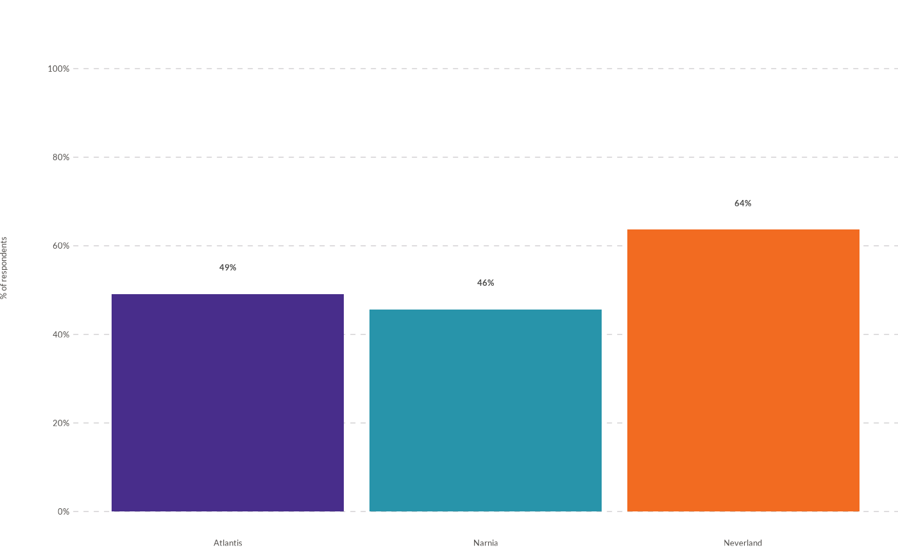
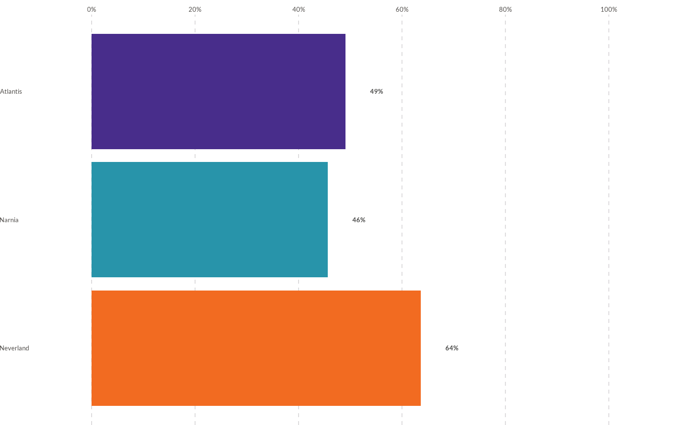
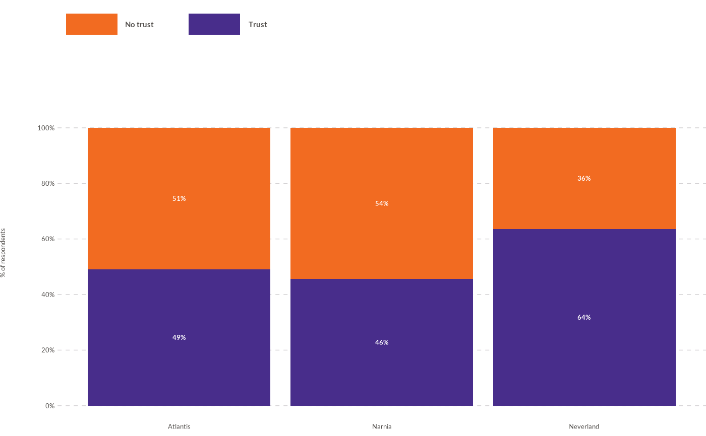

![[Experimental]](figures/lifecycle-experimental.svg)
wjp_bars() takes a data frame with long-format data and returns a ggplot
object with a vertical or horizontal bar chart following WJP style guidelines.
Values are expected on a 0-100 percentage scale.
Usage
wjp_bars(
data,
target,
grouping,
labels = NULL,
colors = NULL,
cvec = NULL,
direction = "vertical",
stacked = FALSE,
lab_pos = NULL,
expand = FALSE,
order = NULL,
width = 0.9,
ptheme = WJP_theme(),
show_legend = FALSE,
position = c("stack", "dodge"),
dodge_width = NULL,
series_reverse = FALSE,
align = c("start", "center"),
track = FALSE,
track_color = "#E5E8E8",
value_position = c("end", "outside", "center", "column"),
value_offset = 5,
value_size = 10,
value_fontface = "bold",
value_colors = NULL,
limits = NULL,
breaks = NULL,
axis_labels = NULL,
expand_mult = NULL,
expand_discrete = NULL,
value_axis = TRUE,
grid = TRUE,
grid_color = "#d1cfd1",
ylab = "% of respondents",
baseline = FALSE,
baseline_color = "#1A1A1A",
label_align = NULL,
label_size = NULL,
label_colour = NULL,
label_wrap = NULL,
label_lineheight = NULL,
ref_lines = NULL,
clip = "on",
layout = NULL,
legend_position = "top",
legend_text_size = 11,
legend_key_size = NULL,
legend_fontface = "bold",
legend_justification = "left"
)Arguments
- data
Data frame containing the data to plot.
- target
String. Column name of the variable that supplies the values to plot.
- grouping
String. Column name of the variable that supplies the categories (X-axis for vertical bars, Y-axis for horizontal bars).
- labels
String. Column name of the variable containing the value labels to display. Default is
NULL(no labels).- colors
String. Column name of the variable that contains the color grouping (the series of stacked or side-by-side bars). Default is
NULL(colors followgrouping).- cvec
Named vector of colors. Names should match the values of the
colorsvariable. Default isNULL(the WJP palette, seewjp_palette(), is applied).- direction
String. Either
"vertical"(default) or"horizontal".- stacked
Logical. Set to
TRUEfor stacked bars (several rows per category, one per segment) so value labels are drawn in white inside each segment. Default isFALSE.- lab_pos
String. Column name of the variable that contains the coordinates for the value labels. Default is
NULL(labels followvalue_position).- expand
Logical. If
TRUE, the axis is expanded to give extra space for value labels above 100%. Default isFALSE.- order
String. Column name of the variable that contains the display order of categories. Default is
NULL(data order).- width
Numeric value between 0 and 1. Width of bars as a fraction of the space available for each category. Default is
0.9.- ptheme
ggplot theme to apply. Default is
WJP_theme().- show_legend
Logical. If
TRUE, displays a horizontal legend above the chart using thecolorsvalues. This is most useful whencolorsdiffers fromgrouping, such as in stacked or side-by-side bars. Default isFALSE.- position
String.
"stack"(default) stacks the rows of a category;"dodge"draws them side by side.- dodge_width
Numeric. Distance between the centers of side-by-side groups, as a fraction of the category space. Default is
NULL(width).- series_reverse
Logical. Reverse the order of side-by-side series. Default is
FALSE.- align
String.
"start"(default, bars start at 0) or"center"(bars centered on the middle of the value axis).- track
Logical. Draw a 100% background track behind each bar. Default is
FALSE.- track_color
String. Color of the track. Default is
"#E5E8E8".- value_position
String. Position of the value labels:
"end"(default),"outside","center", or"column". See Details.- value_offset
Numeric. Distance, in points, between the end of a bar and its label when
value_position = "outside". Default is5.- value_size
Numeric. Size of the value labels, in points. Default is
10.- value_fontface
String. Font face of the value labels:
"plain","bold"(default),"italic","bold.italic", or a weight face such as"semibold.italic"(seewjp_fonts()).- value_colors
Color of the value labels: one color, or a vector named by the
colorsvalues (one color per series). Default isNULL("#4a4a49", white for stacked bars).- limits
Numeric vector of length 2 with the limits of the value axis. Use
NAfor a limit computed from the data (e.g.,c(0, NA)scales the axis to the largest value). Default isNULL(c(0, 110), or larger withexpand = TRUE).- breaks
Numeric vector with the breaks of the value axis. Default is
NULL(every 20 points from 0 to 100).- axis_labels
Labels of the value-axis breaks: a character vector or a function. Default is
NULL(percentages).- expand_mult
Numeric vector of length 1 or 2. Multiplicative expansion of the value axis. Default is
NULL(ggplot2's default; none with alayout).- expand_discrete
Numeric of length 1 or 2. Space added before the first and after the last category (in reading order: top then bottom for horizontal charts, left then right for vertical ones), in categories. Default is
NULL(0.6, or 0.5 with alayout).- value_axis
Logical. Show the labels of the value axis. Default is
TRUE.- grid
Logical. Draw grid lines across the value axis. Default is
TRUE.- grid_color
String. Color of the grid lines. Default is
"#d1cfd1".- ylab
String. Title of the value axis (shown on vertical charts). Default is
"% of respondents";NULLremoves it.- baseline
Logical. Draw a line at the start of the value axis. Default is
FALSE.- baseline_color
String. Color of the baseline. Default is
"#1A1A1A".- label_align
String. Alignment of the category labels:
"left","right", or"center". Default isNULL(left for horizontal charts, centered for vertical ones).- label_size
Numeric. Size of the category labels, in points. Default is
NULL(the size ofptheme).- label_colour
String. Color of the category labels. Default is
NULL(the color ofptheme).- label_wrap
Numeric. Maximum number of characters per line of the category labels. Default is
NULL(no wrapping; existing line breaks are kept).- label_lineheight
Numeric. Line height of multi-line category labels. Default is
NULL.- ref_lines
Reference lines: a numeric vector with positions on the category axis (in category units, e.g.
3.5between the third and fourth categories), or a data frame with columnsaxis("category"or"value"),positionand, optionally,colour,linetype, andlinewidth(points). Default isNULL.- clip
String. Whether to clip drawing to the panel:
"on"(default) or"off"(keeps labels next to 100% visible).- layout
A
wjp_layout()with the geometry of the chart in points. Default isNULL.- legend_position
Legend position:
"top"(default),"bottom","left","right", orc(x, y)inside the panel.- legend_text_size
Numeric. Size of the legend text, in points. Default is
11.- legend_key_size
Numeric. Size of the legend keys, in points. Default is
NULL.- legend_fontface
String. Font face of the legend text. Default is
"bold".- legend_justification
String. Horizontal justification of a legend above or below the chart:
"left"(default),"center", or"right".
Details
The function expects one row per bar: a category in grouping and its value
in target. For stacked bars (stacked = TRUE), supply one row per segment
(each grouping and colors combination) and precompute the label
coordinates (lab_pos) at the center of each segment, or use
value_position = "center"; segment labels are drawn in white.
Side-by-side series. With position = "dodge", rows that share a
category are drawn next to each other (e.g., a country and the EU average),
in the order of the colors values (factor levels or first appearance):
the first series at the top of horizontal charts and at the left of
vertical ones (series_reverse = TRUE swaps them). Value labels and the
optional 100% track follow their bars.
Value labels. value_position = "end" (default) centers each label
on the end of its bar, as in earlier versions, or on lab_pos when given.
"outside" anchors it value_offset points after the end of the bar, and
"center" puts it in the middle of the bar (or of its stacked segment), and
"column" aligns the labels value_offset points after the 100% mark.
Rows with a missing value draw their label at the start of the axis.
Centered bars. align = "center" centers every bar on the middle of
the value axis (funnel-like layouts); see also wjp_funnel().
Geometry in points. With a wjp_layout(), horizontal charts keep a
fixed label column (label_width, label_gap), a 100% track of
track_width points followed by the value column (value_gap,
value_width), a fixed row pitch (row_height) and bar height
(bar_height), and margins. Vertical charts use row_height as the column
pitch, bar_height as the column width, and track_width as the height of
100%. The category labels of horizontal charts are then drawn as a text
layer in the label column.
Like all WJPr chart functions, the returned object is a regular ggplot, so
further customizations can be layered with +.
Examples
library(dplyr)
# Always load the WJP fonts
wjp_fonts()
# Percentage of people that trust their institutions, by country
data4bars <- WJPr::gpp %>%
filter(year == 2022) %>%
mutate(
q1a = as.double(unclass(q1a)),
trust = case_when(q1a <= 2 ~ 1, q1a <= 4 ~ 0)
) %>%
group_by(country) %>%
summarise(trust = mean(trust, na.rm = TRUE) * 100, .groups = "drop") %>%
mutate(
value_label = paste0(round(trust, 0), "%"),
label_position = trust + 6
)
# Vertical bars (default)
wjp_bars(
data4bars,
target = "trust",
grouping = "country",
labels = "value_label",
lab_pos = "label_position",
cvec = c("Atlantis" = "#482d8b",
"Narnia" = "#2894aa",
"Neverland" = "#f26b21")
)

# Horizontal bars
wjp_bars(
data4bars,
target = "trust",
grouping = "country",
labels = "value_label",
lab_pos = "label_position",
direction = "horizontal"
)

# Stacked bars: one row per segment, labels centered on each segment
data4stacked <- WJPr::gpp %>%
filter(year == 2022) %>%
mutate(
q1a = as.double(unclass(q1a)),
level = case_when(q1a <= 2 ~ "Trust", q1a <= 4 ~ "No trust")
) %>%
filter(!is.na(level)) %>%
count(country, level) %>%
group_by(country) %>%
mutate(
percentage = n / sum(n) * 100,
value_label = paste0(round(percentage, 0), "%"),
level = factor(level, levels = c("No trust", "Trust")),
label_position = if_else(
level == "Trust", percentage / 2, 100 - percentage / 2
)
) %>%
ungroup()
wjp_bars(
data4stacked,
target = "percentage",
grouping = "country",
labels = "value_label",
lab_pos = "label_position",
colors = "level",
stacked = TRUE,
show_legend = TRUE,
cvec = c("Trust" = "#482d8b", "No trust" = "#f26b21")
)

# Country and EU average side by side, with a 100% track and values after
# each bar (fictional data)
paired <- data.frame(
category = rep(c("Consumer", "Housing", "Employment"), 2),
series = rep(c("Atlantis", "EU Average"), each = 3),
value = c(40, 10, 19, 21, 7, 10)
)
paired$text <- paste0(paired$value, "%")
wjp_bars(
paired,
target = "value",
grouping = "category",
labels = "text",
colors = "series",
cvec = c("Atlantis" = "#575796", "EU Average" = "#A8A8C8"),
direction = "horizontal",
position = "dodge",
track = TRUE,
value_position = "outside",
value_colors = c("Atlantis" = "#575796", "EU Average" = "#7D7DA8"),
value_axis = FALSE,
grid = FALSE,
label_align = "right",
show_legend = TRUE,
layout = wjp_layout(label_width = 90, label_gap = 6,
track_width = 250, value_gap = 5,
value_width = 30, row_height = 21,
bar_height = 8)
)
